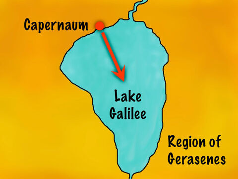
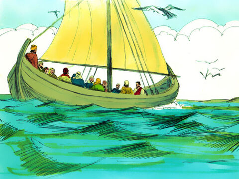
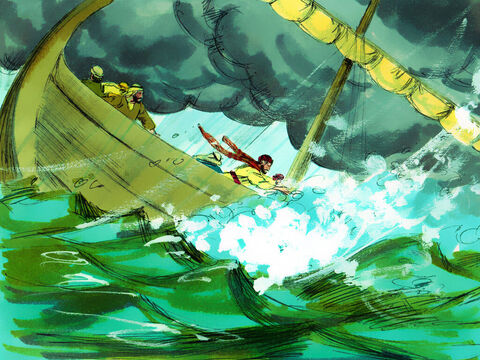
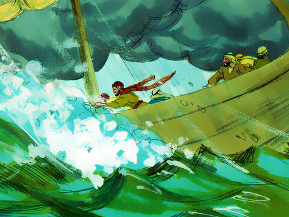

Lord Jesus Calm The Storm
And the same day, when the even was come, he saith unto them, Let us pass over unto the other side.
And when they had sent away the multitude, they took him even as he was in the ship. And there were also with him other little ships.
And there arose a great storm of wind, and the waves beat into the ship, so that it was now full.
And he was in the hinder part of the ship, asleep on a pillow: and they awake him, and say unto him, Master, carest thou not that we perish?
And he arose, and rebuked the wind, and said unto the sea, Peace, be still. And the wind ceased, and there was a great calm.
And he said unto them, Why are ye so fearful? how is it that ye have no faith?
And they feared exceedingly, and said one to another, What manner of man is this, that even the wind and the sea obey him?
Mark 4:35-41
- 
- 
- 
- 